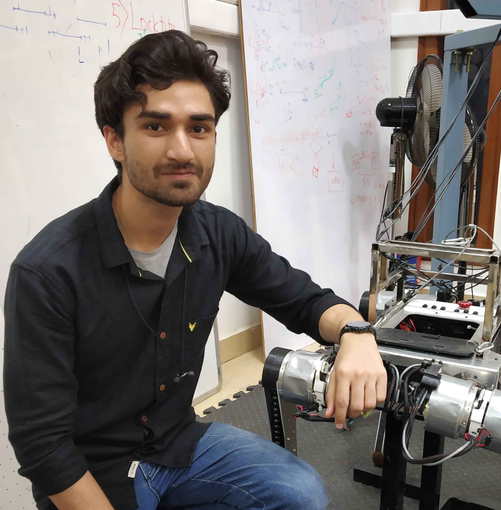

|  |
|
{kind=link}
|
Hello! I am final year dual degree student at the Indian Institute of Technology where I'm pursuing an integrated M.Tech in Mechanical Engineering. I am currently working with Prof. Guillaume Sartoretti at the Multi-Agent Robotic Motion (MARMot) Lab on modified teacher-student frameworks for sample efficient and robust legged locomotion policies. My research interests are in the broad field of control theory and its intersection with Reinforcement Learning. I want to expand the work on scalable control policies for robust robotic motions. Previously, I've worked with Prof. Shishir N.Y. Kolathaya at the Stochastic Robotics Lab on quadrupedal locomotion using Model Predictive Control and Reinforcement Learning Policies and with Prof. Debashish Chakravarty in the Autonomous Ground Vehicle Research group where I benchmarked and imporved upon various control algorithms for autonomous vehices including MPC, LQR, Pure Pursuit and Stanley. When I am not indulged in robotics I love to read and paint digitally making pieces inspired by some of my favourite artists including WLOP and Sam Yung. Feel free to check out my CV and drop me an e-mail if you want to chat with me about anything robotics, art, or the amazing writing of Fredrik Backman! |
|
Sep '23 |
Paper on decaying action priors for accelarated learning accepted at IROS 2024 |
|
Mar '23 |
Honoured to receive the Alumni Cup for outstanding acheivements in Technology at IIT Kharagpur |
|
Mar '23 |
Started working under Prof. Guillaume Sartoretti as a research intern at Marmot Lab |
|
Mar '23 |
Selected for the prestigious IITKGPF Scholarship 2023 |
|
Feb '23 |
Won gold in Inter IIT Technology 11.0's Drona Aviation Challenge and overall gold in Inter IIT 11.0 |
|
Jan '23 |
Paper on Force control for Robust Quadruped Locomotion: A Linear Policy Approach accepted at ICRA 2023 |
|
Dec '23 |
Representing IIT Kharagpur as the captain of the Inter IIT Technology 11.0's Drona Aviation Challenge |
|
Jul '22 |
Paper on multiple waypoint navigation as the first author accepted at ICCR 2022 |
|
May '22 |
Started working under Prof. Shishir N. Y. Kolathaya as a resarch intern in Stochastic Robotics Lab at IISc Bangalore |
|
Mar '22 |
Won the gold medal in Inter IIT Tech Meet 2022 in DRDO UAV based UGV navigation challenge |
|
Nov '21 |
Started working as a Robotics Software Development intern at Vecros |
|
Sep '21 |
Won the 1st place at the IROS-RSJ Navigation and Manipulation Challenge 2021 |
|
Mar '20 |
Joined Autonomous Ground Vehicle Research Group as a Mechatronics Team Member |
|
July '19 |
Started my undergraduate journey at IIT Kharagpur |

|
Mar '23 - Present Working under the supervision of Prof. Guillaume Sartoretti. We are working on end-to-end compliant torque-based RL policies using modified teacher-student frameworks. |
|
|
May '22 - Dec '22 Worked under the supervision of Prof. Shishir N. Y. Kolathaya in Stochastic Robotics Lab. We are working on legged locomotion using classical as well as reinforcement learning based controllers. |
|
|
Mar '20 - Present Working under the supervision of Prof. Debashish Chakravarty in the Autonomous Vehicle Research Group. We are a student research group working on safe and robust autonomous driving as well as taking part in various Robotics competetion all over the world including IROS, URC and IGVC. |
|
|
Nov '21 - Jan '22 Worked as a software developer at Vecros. We worked in industry standard Drones for factory safety inspection. |

|
Accepted at IROS 2024 [paper][video] Optimal Control for legged robots has gone through a paradigm shift from position-based to torque-based control, owing to the latter’s compliant and robust nature. In parallel to this shift, the community has also turned to Deep Reinforcement Learning (DRL) as a promising approach to directly learn locomotion policies for complex real-life tasks. However, most end-to-end DRL approaches still operate in position space, mainly because learning in torque space is often sample-inefficient and does not consistently converge to natural gaits. To address these challenges, we introduce Decaying Action Priors (DecAP), a novel three-stage framework to learn and deploy torque policies for legged locomotion. |

|
Accepted at ICRA 2023 [paper][website] This work presents a simple linear policy for direct force control for quadrupedal robot locomotion. The motivation is that force control is essential for highly dynamic and agile motions. Unlike the majority of the existing works that use complex nonlinear function approximators to represent the RL policy or model predictive control (MPC) methods with many optimization variables in the order of hundred, our controller uses a simple linear function approximator to represent policy. |

|
Accepted at ICCR 2022 [paper][code] We present a multiple waypoint path planner and controller stack for navigation in unknown indoor environments where waypoints include the goal along with the intermediary points that the robot must traverse before reaching the goal. Our approach makes use of a global planner (to find the next best waypoint at any instant), a local planner (to plan the path to a specific waypoint) and an adaptive Model Predictive Control strategy (for robust system control and faster maneuvers). We evaluate our algorithm on a set of randomly generated obstacle maps, intermediate waypoints and start-goal pairs, with results indicating significant reduction in computational costs, with high accuracies and robust control. |

|
MARMot Lab, NUS [website]
This project is concerned with
training a Proximal Policy
Optimization
based parallel DRL control policy
for control of a hexapod robot
lovingly named Yuna (based on a game
character with different eye colors
since that’s what Yuna’s LEDs look
like :p) |

|
Stoch Lab, IISc Bangalore [website]
The gaol of the project was to develop a Representation Free Model Predictive Control
for a in-house quadruped robot named Stoch3. This included solving for optimal Ground Reaction
Forces based on a Single Rigid Body dynamics model while following gaits programmed using
a finite state machine. The model used rotation matrices directly to get rid of the issues
with euler angles (gimbal lock) and with quaternions(unwinding).
|

|
AGV, IIT Kharagpur [LQR Code]
[Geometric Controls]
This project was aimed at benchmarking various control algorithms for
autononomous ground vehciles. This included algorithms like Model-Predictive-Control, Linear Quadratic Regulator,
Pure Pursuit and Stanley.
|

|
IIT Kharagpur and DRDO [Presentation]
This competetion was targeted at co-ordinating a UAV and an Unmanned Snow clearing vehicle for
navigation in a hilly snow covered terrain and the UGV's autonomous traversal. We developed
a Non-Linear Model Predictive Control based controller for the UGV and a path planning algorithm
for the UAV. We won the gold medal in the competetion.
|

|
IIT Kharagpur and Drona Aviation
This goal of this challenge was to develop a vision based state feedback control for
an indoor multi-drone system handling socket communication with the flight controller
without the use of ROS. I led the team for this competetion and we won a gold.
|

|
MARMot Lab [code]
This code includes various implementation of a model predictive control including multiple and
single shooting methods. It includes both implementations for point tracking as well as
trajectory tracking for mobile robots.
|
| My artwork: Selected artwork and studies |
| Blog Posts: Model Predictive Control |
This template is a modification to Jon Barron's website.